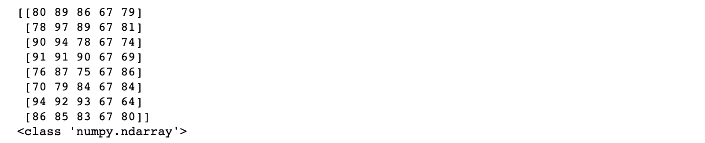
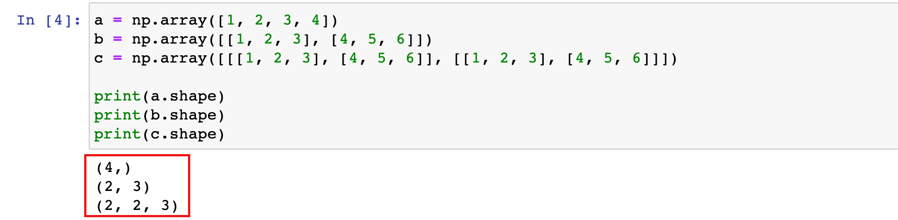
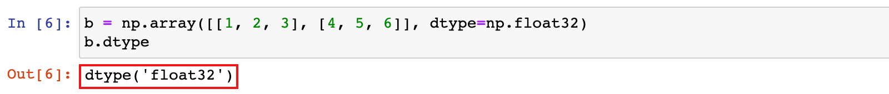
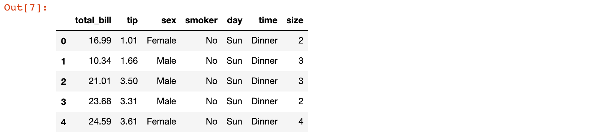
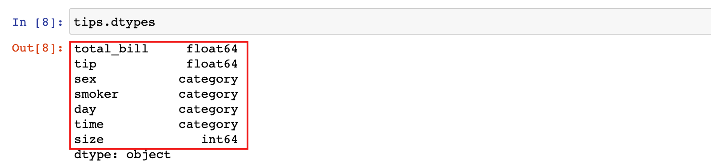

数据类型简介
学习目标
- 了解 Numpy 的特点
- 知道 pandas 中的数据类型
1. pandas 数据类型简介
1.1 Numpy 介绍
Numpy（Numerical Python）是一个开源的Python科学计算库，用于快速处理任意维度的数组。
1）Numpy 支持常见的数组和矩阵操作
- 对于同样的数值计算任务，使用 Numpy 比直接使用 Python 要简洁的多
2）Numpy 使用ndarray对象来处理多维数组，该对象是一个快速而灵活的大数据容器
比如我们现在对下面表格中的数据用 Numpy 的 ndarray 类型来存储：

import numpy as np
# 创建ndarray
score = np.array([
[80, 89, 86, 67, 79],
[78, 97, 89, 67, 81],
[90, 94, 78, 67, 74],
[91, 91, 90, 67, 69],
[76, 87, 75, 67, 86],
[70, 79, 84, 67, 84],
[94, 92, 93, 67, 64],
[86, 85, 83, 67, 80]
])
print(score)
print(type(score))

思考：使用 Python 列表可以存储一维数组，通过列表的嵌套可以实现存储多维数组，那么为什么还需要使用Numpy的ndarray呢？
答：我们来做一个ndarray与Python原生list运算效率对比，ndarry 计算效率更高
import random
import time
import numpy as np
a = []
for i in range(1000000):
a.append(random.random())
t1 = time.time()
sum1=sum(a)
t2=time.time()
b=np.array(a)
t3=time.time()
sum2=np.sum(b)
t4=time.time()
print(t2-t1, t4-t3)

Numpy专门针对ndarray的操作和运算进行了设计，所以数组的存储效率和输入输出性能远优于Python中的嵌套列表，数组越大，Numpy的优势就越明显
Numpy ndarray的优势：
1）数据在内存中存储的风格
- ndarray 在存储数据时所有元素的类型都是相同的，数据内存地址是连续的，批量操作数组元素时速度更快
- python 原生 list 只能通过寻址方式找到下一个元素，这虽然也导致了在通用性方面 Numpy 的 ndarray 不及python 原生 list，但计算的时候速度就慢了

2）ndarray 支持并行化运算
3）Numpy 底层使用 C 语言编写，内部解除了 GIL（全局解释器锁），其对数组的操作速度不受 python 解释器的限制，可以利用CPU的多核心进行运算，效率远高于纯 python 代码
1.2 Numpy 的 ndarray
1.2.1 ndarray 的属性
ndarray的属性清单：
| 属性 | 说明 |
|---|---|
| ndarray.shape | 数组维度的元组 |
| ndarray.ndim | 数组维数 |
| ndarray.size | 数组中的元素数量 |
| ndarray.itemsize | 一个数组元素的长度（字节） |
| ndarray.dtype | 数组元素的类型 |
执行下面的代码：
a = np.array([1, 2, 3, 4])
b = np.array([[1, 2, 3], [4, 5, 6]])
c = np.array([[[1, 2, 3], [4, 5, 6]], [[1, 2, 3], [4, 5, 6]]])
print(a.shape)
print(b.shape)
print(c.shape)

print(c.ndim)
print(c.size)
print(c.itemsize)
print(c.dtype)

1.2.2 ndarray 的类型
下表为ndarray的全部数据类型；最常用的类型是布尔和int64，其他只要了解就好：
| 名称 | 描述 | 简写 |
|---|---|---|
| np.bool | 用一个字节存储的布尔类型（True或False） | 'b' |
| np.int8 | 一个字节大小，-128 至 127 | 'i' |
| np.int16 | 整数，-32768 至 32767 | 'i2' |
| np.int32 | 整数，-2的31次方 至 2的32次方 -1 | 'i4' |
| np.int64 | 整数，-2的63次方 至 2的63次方 - 1 | 'i8' |
| np.uint8 | 无符号整数，0 至 255 | 'u' |
| np.uint16 | 无符号整数，0 至 65535 | 'u2' |
| np.uint32 | 无符号整数，0 至 2的32次方 - 1 | 'u4' |
| np.uint64 | 无符号整数，0 至 2的64次方 - 1 | 'u8' |
| np.float16 | 半精度浮点数：16位，正负号1位，指数5位，精度10位 | 'f2' |
| np.float32 | 单精度浮点数：32位，正负号1位，指数8位，精度23位 | 'f4' |
| np.float64 | 双精度浮点数：64位，正负号1位，指数11位，精度52位 | 'f8' |
| np.complex64 | 复数，分别用两个32位浮点数表示实部和虚部 | 'c8' |
| np.complex128 | 复数，分别用两个64位浮点数表示实部和虚部 | 'c16' |
| np.object_ | python对象 | 'O' |
| np.string_ | 字符串 | 'S' |
| np.unicode_ | unicode类型 |
创建 ndarry 的时候指定类型：
b = np.array([[1, 2, 3], [4, 5, 6]], dtype=np.float32)
b.dtype

1.3 pandas 的数据类型
pandas 是基于 Numpy 的，很多功能都依赖于 Numpy 的 ndarray 实现的，pandas 的数据类型很多与 Numpy 类似，属性也有很多类似。比如 pandas 数据中的 NaN 就是 numpy.nan
下图中为 pandas 的数据类型清单，其中 category 我们之前的学习中没有见过的：
- category 是由固定的且有限数量的变量组成的。比如：性别、社会阶层、血型、国籍、观察时段、赞美程度等等。
- category 类型的数据可以具有特定的顺序。比如：性别分为男、女，血型ABO。我们会在本章节的最后来了解这种数据类型。

我们以 seaborn 包中自带的 tips 数据集为例，具体来查看数据类型：
import seaborn as sns
tips = sns.load_dataset('tips')
tips.head()

# 查看数据类型
tips.dtypes

总结
- Numpy 的特点
- Numpy 是一个高效科学计算库，pandas 的数据计算功能是对 Numpy 的封装
- ndarray 是 Numpy 的基本数据结构，pandas 的 Series 和 DataFrame 好多函数和属性都与 ndarray 一样
- Numpy 的计算效率比原生 Python 效率高很多，并且支持并行计算
- pandas 数据类型
- pandas 除了数值型的 int 和 float 类型外，还有object、category、bool、datetime类型